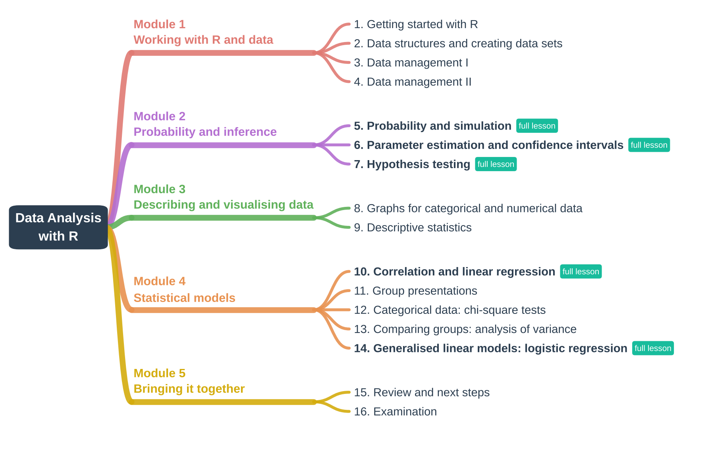

An introductory statistics course for students from
any discipline
Course overview
Data Analysis with R is an undergraduate course I designed
and introduced at Renmin University of China. I taught it in spring 2024
and again, revised, in spring 2025. It was offered as an elective open
to students from across the university, with classes of up to 68
students. A single class could include students of music, journalism,
sociology, statistics and physics. Most had little mathematical
background and had never programmed.
Course goals. By the end of the course, students
can
import, clean and manage a data set in R;
describe and visualise data appropriately for the type of
variable;
explain the logic of estimation and hypothesis testing, and apply
them;
fit, interpret and critically evaluate linear and logistic
regression models;
report an analysis of their own data, with code, results and
interpretation.
Approach
Each session follows the same pattern:
Start from something students can observe. Before a
formula appears, students run a small simulation or look at a plot and
describe what they see.
Connect the observation to the formal idea. The
definition or theorem then explains a pattern that students have already
seen for themselves.
Practise with data. Short exercises ask students to
change the code and reason about what happens, first on simulated data,
then on real data.
Each session opens with a concept map that reviews the previous
session and places the new topic in the structure of the course, and
closes with a summary map, so that students see how the methods build on
each other.
The classroom is meant as a place where students can voice their
opinions and discuss openly without fear of judgement; the teacher’s
role is that of a facilitator.
R is used both for data analysis and as a laboratory for statistical
ideas: coverage rates, sampling distributions and error rates become
things students can count, not only definitions to memorise.
Course map

Sixteen weekly sessions, in the order in which they were taught. Each
teaching session links to its slides; sessions marked full lesson are also available as complete lessons
with code, simulations, explanations and exercises.
Module 1 · Working with R and data
1. Getting started with R
Objectives: run code in RStudio, work with objects,
scripts and packages, and reproduce a first small analysis.
Topics: why R, R and RStudio, the workspace,
packages, reusing output as input, a worked example.
Objectives: choose a graph that matches the type of
variable and the question.
Topics: contingency tables, bar charts and spine
plots, pie and fan charts, histograms and density curves, box and violin
plots, scatter plots; an exercise on the iris
data.
Objectives: summarise the centre, spread and shape
of a distribution and choose suitable measures.
Topics: mean, median, mode and quantiles;
variance, standard deviation and coefficient of variation; standard
scores; skewness and kurtosis. The group project is introduced in this
session.
Objectives: fit, interpret and check simple and
multiple regression models.
Topics: Pearson and Spearman correlation,
correlation versus causation, least squares, diagnostic plots,
polynomial terms, the bias–variance trade-off, variable selection,
multicollinearity.
Objectives: present an analysis of a self-chosen
data set and answer questions from peers.
Each group receives feedback on its code, its
visualisations and its choice of methods. Groups are encouraged to use
AI tools, provided they share their prompts, and they answer questions
live without them. Each group also reflects on what was hardest in the
project and what they learned from it.
12. Categorical data: chi-square
tests
Objectives: test goodness of fit and independence,
and check R’s results by hand.
Topics: contingency tables, expected counts, the
chi-square distribution, chisq.test(), an application to
survey data on gender attitudes.
Objectives: explain ANOVA as a comparison of
between- and within-group variation, and follow up on a significant
result.
Topics: simulated groups with small and large
within- and between-group variance, sums of squares, the F test, Tukey’s
HSD, Levene’s test, the Kruskal–Wallis test.
14. Generalised linear models: logistic
regressionfull lesson
Objectives: model a binary outcome, interpret odds
ratios and evaluate predictions on new data.
Topics: a look back at which method fits which
type of outcome and predictor, leading to models for outcomes that are
not normal; maximum likelihood, introduced through a scene from the TV
drama Lurk (潜伏) in which the main characters find a
stranger’s footprints in their home and weigh the possible explanations;
AIC and BIC, log-odds and odds ratios, predicted probabilities,
classification, sensitivity and specificity.
Objectives: connect the methods of the course and
look ahead to ggplot2 and to data science more broadly.
Topics: a concept map of the whole course; a
first look at ggplot2 through a video tutorial; data
science more broadly, closing with a music video on data
science.
16. Examination
Objectives: apply the course methods independently
to short analysis problems in R, in an open-note examination.
How the methods fit together
Session 14 opens by looking back at the methods so far, organised by
the type of outcome and predictor. The open question, what to do when
the outcome is not normal, leads into generalised linear models:
Outcome
Predictor
Method in this course
Categorical
Categorical
Chi-square test (session 12)
Numerical
Categorical
t-test, analysis of variance (sessions 7 and 13)
Numerical
Numerical
Simple, multiple and polynomial regression (session 10)
Binary or otherwise non-normal
Any
Generalised linear models, e.g. logistic regression (session
14)
Assessment and course design
The final grade combines coursework (40%) and an
open-note examination (60%).
Exercises in every session. Sessions end with tasks
that ask students to modify the code and explain the result in words;
longer exercises, such as the data management exercise in session 4,
come with worked solutions.
Group project. In groups of four to six, students
analyse a data set of their own choice that contains at least one
categorical and one numerical variable. They import it into R, choose
two or three suitable graphs (at least one made with
ggplot2), describe the centre, spread and shape of the
distributions, and present their code, results and interpretation in a
ten-minute presentation. Presentations are graded individually as well
as by group.
Written assignments. Each group receives written
feedback on its interpretation and on the validity and limitations of
its models, along with answers to the questions the group raised.
Open-note examination with short analysis problems
in R.
Teaching students with mixed quantitative
backgrounds. Simulation lets students without much mathematics
see a result before they meet its formal statement, while the formal
statement is always given for students who want it. Code is provided as
worked examples that students change step by step rather than write from
scratch. Optional “thinking questions” in the assignments give stronger
students room to go further.
Open teaching materials
The lesson sources are available on GitHub as
R Markdown files; each lesson page also has a Code
button to download its source. The data are simulated or come from
packages that ship with R, so every lesson runs as it is:
Lesson text, code and figures are licensed under CC BY 4.0 (text
and figures) and the MIT License (code). You are welcome to reuse and
adapt them; please credit the source.
The slides (LaTeX Beamer, in Chinese and English as taught in 2025)
are shared for viewing and teaching use with attribution. They are not
covered by the CC BY licence, and any third-party images in them remain
the property of their owners.